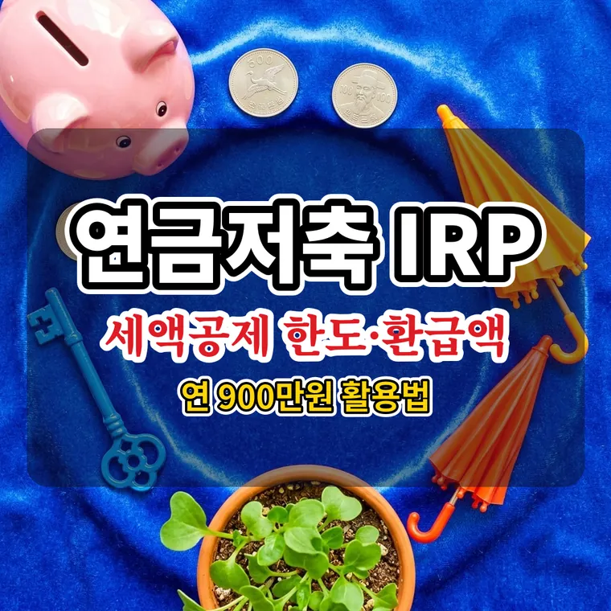

연금저축 IRP 세액공제 한도 및 환급액 계산 방법 (연 900만원 최적 활용법)
연금저축은 연 600만 원, IRP를 합치면 연 900만 원까지 세액공제를 받습니다. 총급여 5,500만 원 이하는 900만 원 납입 시 148만 5천 원, 초과는 118만 8천 원을 돌려받습니다.

연말정산 시기가 다가오면 많은 분이 관심을 갖는 절세 수단이 연금저축과 IRP(개인형 퇴직연금)입니다. 두 계좌에 넣은 돈에 따라 매년 수십만 원에서 100만 원 이상의 세금을 돌려받을 수 있습니다.
다만 세액공제가 적용되는 한도와 총급여별 공제율을 정확히 알아야 혜택을 놓치지 않습니다. 합산 한도부터 환급액 계산, 납입할 때 주의할 점까지 정리했습니다.
연금저축 단독 한도 600만 원과 IRP 합산 900만 원
연금저축과 IRP를 합쳐 한 해 동안 넣을 수 있는 돈은 최대 1,800만 원입니다. 하지만 세액공제가 적용되는 금액은 이 중 최대 900만 원까지입니다.
| 구분 | 세액공제 한도 |
|---|---|
| 연금저축 단독 | 연 600만 원 |
| 연금저축 + IRP 합산 | 연 900만 원 |
| 연금계좌 전체 납입 한도 | 연 1,800만 원 |
연금저축만 있으면 600만 원을 넘겨 넣어도 추가 공제를 받을 수 없습니다. 900만 원까지 공제받으려면 연금저축 600만 원에 IRP 300만 원을 더하거나, IRP 한 곳에 900만 원을 넣으면 됩니다.
12월 31일 납입 마감, 한도는 이월되지 않습니다
세액공제 대상 금액은 1월 1일부터 12월 31일까지 계좌에 실제로 입금이 끝난 돈만 계산합니다.
올해 채우지 못한 공제 한도는 다음 해로 넘어가지 않고 사라집니다. 금융회사의 영업일과 입금 처리 시간을 생각해 연말 직전에 몰아서 넣지 않는 것이 좋습니다.
총급여 5,500만 원 이하 16.5%, 초과 13.2%
환급액은 총급여(사업소득자는 종합소득금액)에 따라 공제율이 달라집니다. 지방소득세 10%를 더한 최종 공제율입니다.
| 구분 | 공제율 |
|---|---|
| 총급여 5,500만 원 이하 (종합소득금액 4,500만 원 이하) | 16.5% |
| 총급여 5,500만 원 초과 | 13.2% |
납입액(한도 안) × 공제율 = 세액공제 환급액
납입액별 실제 환급액 비교
같은 금액을 넣어도 총급여 구간에 따라 돌려받는 금액이 다릅니다.
| 납입액 | 5,500만 원 이하 (16.5%) | 5,500만 원 초과 (13.2%) |
|---|---|---|
| 300만 원 | 49만 5천 원 | 39만 6천 원 |
| 600만 원 | 99만 원 | 79만 2천 원 |
| 900만 원 | 148만 5천 원 | 118만 8천 원 |
900만 원을 모두 채웠을 때 두 구간의 차이는 29만 7천 원입니다. 공제율은 내 총급여가 5,500만 원 이하인지 초과인지에 따라 정해집니다.
중도해지하면 16.5% 기타소득세가 붙습니다
연금계좌를 중간에 해지하거나 연금이 아닌 형태로 받으면, 세액공제를 받은 원금과 운용 수익에 16.5%의 기타소득세가 붙습니다.
그동안 받은 공제 혜택이 줄어들거나 오히려 손해가 날 수 있습니다. 가까운 시일에 써야 하는 목돈은 연금계좌에 넣을지 신중하게 판단해야 합니다.
연금계좌는 노후 자금을 모으는 용도로 만들어진 상품입니다. 중도해지 시 불이익이 있으니 납입 전에 가입한 금융회사에서 조건을 확인하세요.
내 한도 확인하는 순서
먼저 국세청 홈택스나 근로소득 원천징수영수증에서 내 총급여를 확인합니다. 총급여가 5,500만 원 이하인지에 따라 공제율이 정해집니다.
그다음 올해 연금저축과 IRP에 넣은 금액을 합쳐 보고, 600만 원 또는 900만 원까지 얼마가 남았는지 계산합니다. 연봉계산기에 연봉을 넣으면 월급 구조와 함께 내 총급여 수준을 가늠할 수 있습니다.
세액공제 한도와 공제율은 세법 개정으로 바뀔 수 있습니다. 구체적인 판단은 국세청 홈택스 안내를 확인하세요.
자주 묻는 질문
네, 가능합니다. 연금저축 없이 IRP 계좌 단독으로 900만 원을 납입해도 합산 한도 900만 원 전체에 대해 세액공제를 받을 수 있습니다.
연금계좌 전체 납입 한도인 연 1,800만 원까지는 입금할 수 있지만, 세액공제는 900만 원까지만 적용됩니다. 초과 납입분은 그 해 공제 대상이 아니며, 남은 한도도 다음 해로 이월되지 않습니다. 공제받지 않은 납입금을 꺼낼 때의 과세 방식은 상품과 시기에 따라 다르니 가입한 금융회사나 국세청에서 확인하세요.
아니요, 포함되지 않습니다. 회사에서 지급받아 IRP로 입금된 퇴직소득(퇴직금)은 세액공제 대상이 아니며, 가입자가 직접 추가로 입금한 개인 납입금만 세액공제 대상 금액으로 인정됩니다.
두 계좌를 합쳐 900만 원까지 공제되므로 어느 쪽에 넣어도 공제액은 같습니다. 다만 연금저축은 단독 한도가 600만 원이라, 600만 원을 넘는 300만 원은 IRP에 넣어야 공제 대상이 됩니다. 수수료와 상품 선택 범위, 인출 조건은 계좌마다 다르니 가입한 금융회사에서 비교해 보세요.